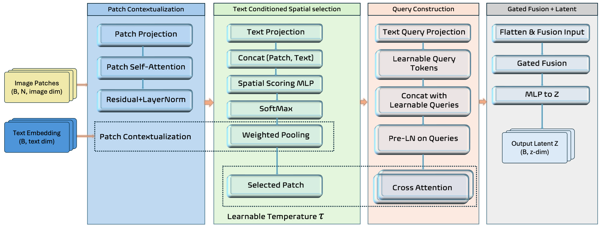
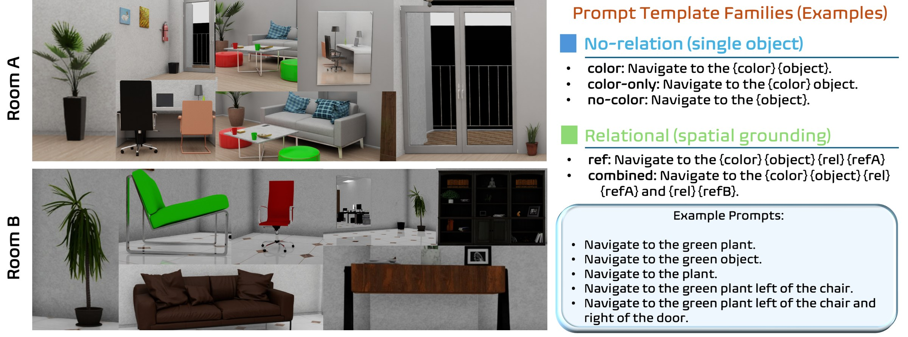
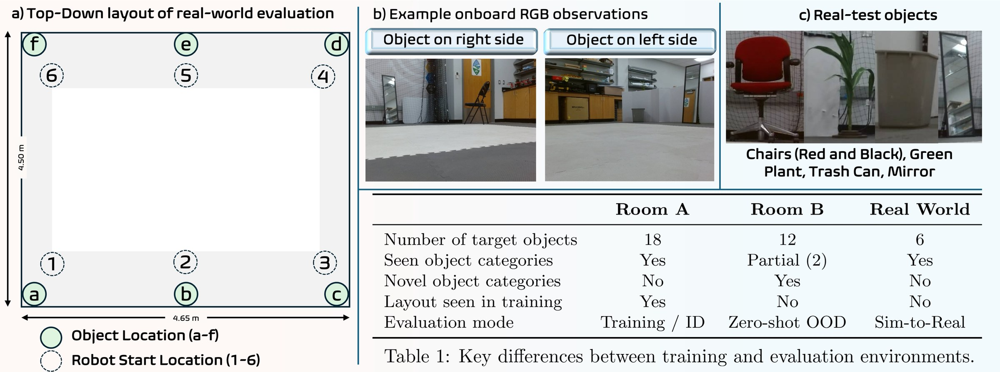
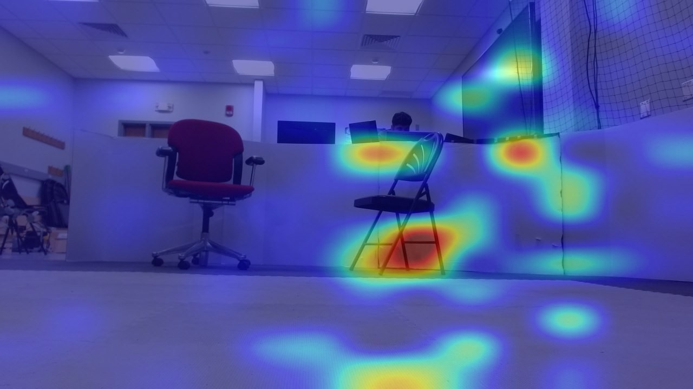
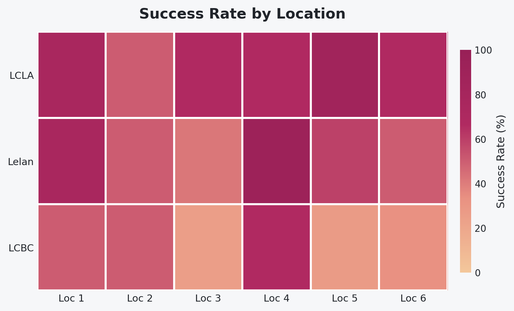
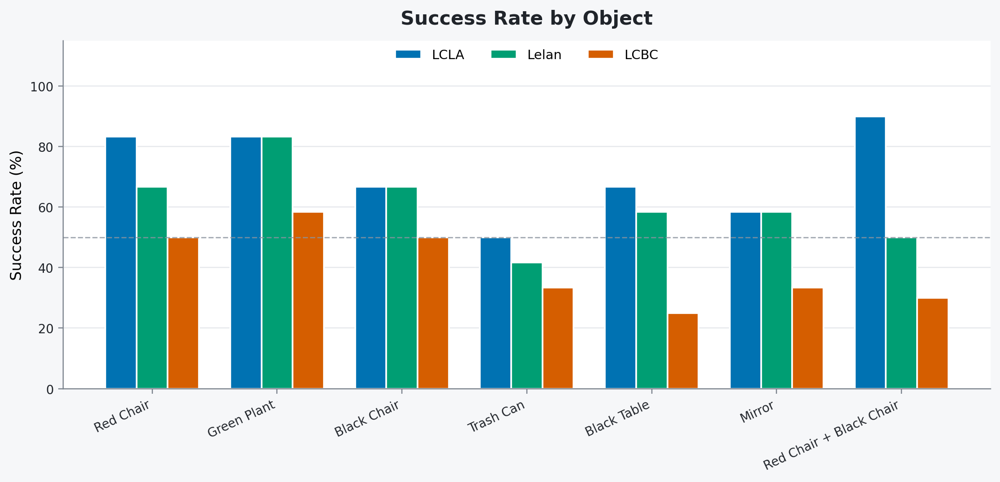
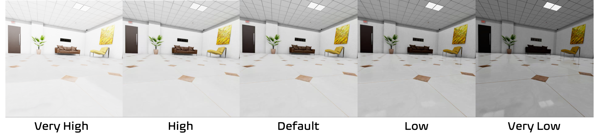
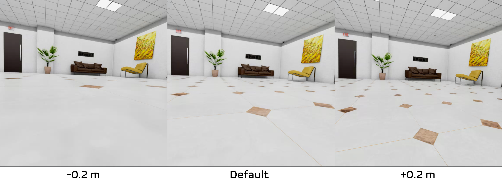

Train a privileged expert.
A PPO policy learns navigation from compact geometric state: goal direction, obstacle distances, and relative pose. Its encoder and action head are then frozen.
Overview
A privileged expert learns how to navigate from geometric state. LCLA then teaches a lightweight adapter to map what a robot sees and is told into that expert’s latent space, so the expert’s frozen controller can be reused directly from pixels and language.

Overview of LCLA. A privileged expert policy trained from geometric state observations induces a task-relevant latent representation z ∈ ℝD. A lightweight adapter aligns frozen vision-language embeddings to this latent space while keeping the expert policy frozen. During deployment, visual and language inputs are mapped into the expert latent space and passed through the frozen action head for control.
Abstract
We propose LCLA (Language-Conditioned Latent Alignment), a framework for vision-language navigation that decouples perception from control by aligning visual-language observations to the latent representation of a frozen privileged expert policy. A lightweight adapter maps frozen vision-language embeddings into the expert latent space using supervised latent alignment rather than end-to-end policy optimization, enabling expert navigation behavior to be reused across perception backbones and environmental variations. We evaluate LCLA across in-distribution simulation, zero-shot out-of-distribution environments, robustness perturbations, and direct real-world deployment on a TurtleBot platform, where it improves OOD success rate from 49.3% to 80.5% and reduces collision rates from 45.0% to 15.5% relative to direct behavior cloning. Without any real-world fine-tuning or calibration, LCLA attains 70.7% real-world success, compared to 60.9% for a navigation-pretrained baseline and 40.2% for direct behavior cloning, demonstrating robust and efficient sim2real transfer while remaining lightweight at inference time.
Video
Method
A PPO policy learns navigation from compact geometric state: goal direction, obstacle distances, and relative pose. Its encoder and action head are then frozen.
Expert rollouts give (image, instruction, latent) tuples. A lightweight adapter on a frozen SigLIP2 backbone learns to predict the expert latent. This is supervised alignment, with no reinforcement learning.
At test time the robot has no privileged state. RGB and an instruction map through the VLM and adapter into the expert latent, and the frozen action head produces the controls.

LCLAA: the Language-Conditioned Latent Alignment Adapter. Image patches are contextualized by self-attention, a text-conditioned spatial bottleneck softly selects task-relevant regions, learnable text-conditioned queries attend to that context through stacked cross-attention, and a gated fusion with the text residual produces the aligned latent ẑ.
Latent MSE anchors absolute error, symmetric InfoNCE (τ = 0.07) aligns relational structure, and an action-consistency term penalizes latent errors by their effect through the frozen controller.
Environments
Room A (18 targets) is the only training environment. Room B is held out entirely, with novel object categories, layouts, textures, and lighting. Structured prompts with colors and spatial relations push the adapter toward compositional grounding.

Results
LCLA reaches 90.4% success in-distribution, within 7 points of the privileged expert, and keeps 80.5% in the unseen room. Baselines cluster near 60% with 3–4× more collisions, even LeLaN with a ~14× larger navigation-pretrained backbone.
| Method | Room A (ID) | Room B (OOD) | Real World | Params train / total |
Time ms |
|||||
|---|---|---|---|---|---|---|---|---|---|---|
| SR | SPL | Coll. | SR | SPL | Coll. | SR | SPL | |||
| Privileged PPO upper bound | 97.7 | 0.977 | 2.3 | – | – | – | – | – | 0.49M / 0.49M | 5.0 |
| LeLaN | 61.1 | 0.606 | 33.7 | 54.8 | 0.548 | 41.1 | 60.9 | – | 30.5M / 181.9M | 135.7 |
| LCBC | 60.1 | 0.591 | 39.7 | 49.3 | 0.491 | 45.0 | 40.2 | 0.297 | 13.7M / 99.7M | 75.4 |
| PELA | 62.5 | 0.616 | 37.5 | 57.6 | 0.576 | 40.9 | – | – | 1.2M / 87.2M | 69.1 |
| LCLA ours | 90.4 | 0.903 | 9.6 | 80.5 | 0.804 | 15.5 | 70.7 | 0.522 | 13.0M / 99.0M | 74.2 |
SR = success rate (%), SPL = success weighted by path length, Coll. = collision rate (%). Real-world results are over 82 trials per method with no fine-tuning; real-world SPL is a proxy from executed trajectory length. PELA is evaluated in simulation only. LCBC = language-conditioned behavior cloning (same encoder, predicts actions directly); PELA = pooled-embedding latent alignment (no token-level language conditioning).
New in the CoRL version
Every policy is deployed directly on a TurtleBot using only onboard RGB and a language instruction, with no real-world fine-tuning, calibration, or domain adaptation. Each scene holds the goal and a distractor, so the robot has to ground the instruction rather than drive to the most salient object.

A 4.65 m × 4.50 m arena with six start positions (1–6) and six object locations (a–f). Positions 1–3 share background context; 4–6 introduce different backgrounds and clutter. Each configuration is tested with the target on the left and right of the camera frame.



Real-world success rate by target object. LCLA matches or exceeds both baselines on every object, with its largest margin on the paired red chair + black chair scenes, where the instruction alone decides the goal.
Analysis
A controlled 2 × 2 study crosses perception (pooled vs. language-conditioned) with prediction target (actions vs. expert latent). Combining them is worth more than the sum of the parts.
| Perception | Target | Room A | Room B |
|---|---|---|---|
| Pooled | Action | 49.0 | 19.4 |
| Lang.-cond. | Action | 60.1 | 49.3 |
| Pooled | Latent | 62.5 | 57.6 |
| Lang.-cond. | Latent | 90.4 | 80.5 |
Success rate (%). Interaction effect: +16.8 points.
Latent MSE alone is not enough. Action consistency and InfoNCE each help a little; together they unlock the full result.
| Objective | SR (%) | SPL |
|---|---|---|
| Latent MSE | 49.0 | 0.486 |
| + InfoNCE | 51.0 | 0.505 |
| + Action consistency | 57.0 | 0.567 |
| Full objective | 90.4 | 0.903 |
Room A. Matching the expert latent size (dz = 256) is also critical: 128 and 512 drop to ~47% in Room B.
Under illumination changes and ±0.2 m camera-height shifts in Room B, performance degrades gradually rather than catastrophically. Stronger VLM backbones help: with SigLIP2, the worst case is 70.9% and the average is 79.0%, vs. 53.8% / 59.3% for CLIP.


Citation
@inproceedings{subedi2026lcla,
title = {LCLA: Language-Conditioned Latent Alignment for Vision-Language Navigation},
author = {Subedi, Nitesh and Haroon, Adam and Tetteh, Samuel and Koirala, Prajwal and Fleming, Cody and Sarkar, Soumik},
booktitle = {Conference on Robot Learning (CoRL)},
year = {2026}
}This work is jointly funded by the NSF–USDA COALESCE program (NSF award #1954556; USDA award #2021-6702134418), NSF CNS-2313104, and the Iowa Space Grant Consortium under NASA Award No. 80NSSC25M7126.